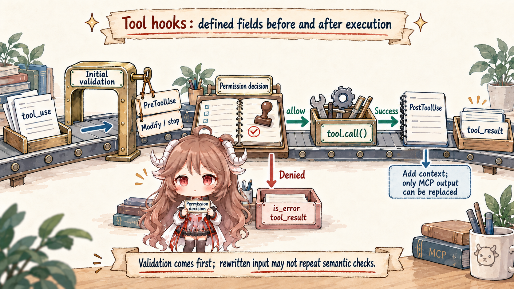
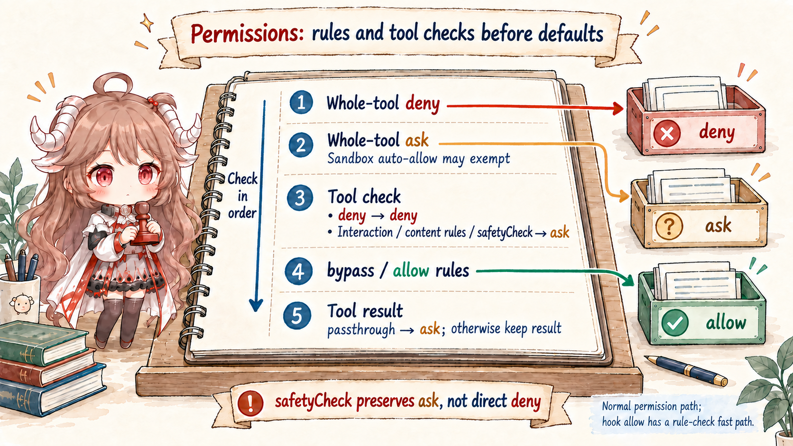
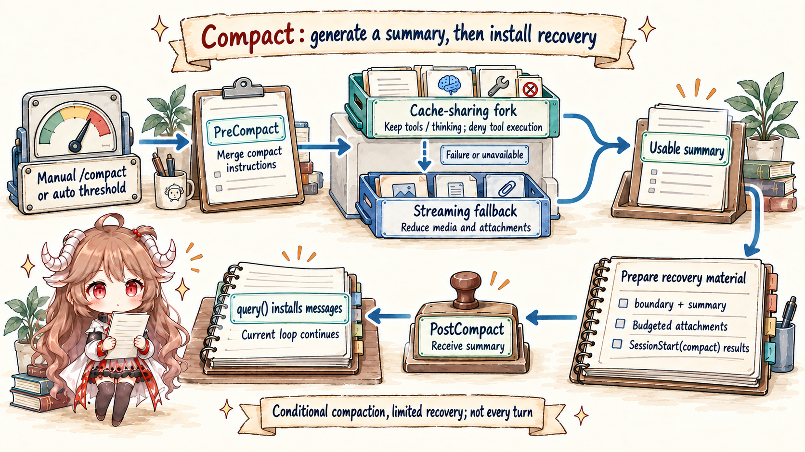

A hook system can become a bag of callbacks if you read it only from configuration. Claude Code is easier to understand if each hook event is attached to the runtime gate where it fires.
1. Matching comes before execution
The runtime first finds hooks whose event and matcher apply to the current operation. That means a hook is not globally active for every action. It is selected by lifecycle event, tool name or pattern, and configuration scope.
2. Tool hooks sit on the side-effect boundary
PreToolUse is especially important because it runs before a local side effect. It can observe the tool request and influence whether execution continues. PostToolUse sees the completed action and can add auditing or follow-up behavior. Together they make tool execution governable.

3. Permission and hooks overlap by design
The permission decision stack and hook system meet near tool execution. That is not duplication. Permission rules express policy. Hooks give projects a programmable governance point. The runtime coordinates both before the side effect happens.

4. Stop hooks govern turn boundaries
Stop and SubagentStop fire after a main or child loop reaches a stop point. That gives the runtime a place to run cleanup, checks, or notifications after the model turn settles. These hooks are not about one tool call; they are about the turn lifecycle.
5. Compact hooks govern memory reshaping
Compact-related hooks sit near a different boundary: the moment a long session is reshaped. That boundary affects future model-visible context and recovery state, so it deserves its own lifecycle event rather than being hidden inside generic message handling.

6. The invariant
A hook is useful only because of where it is placed. Read the hook name together with the runtime boundary it protects: session start, prompt submission, tool execution, stop, subagent stop, and compact. That map prevents hooks from looking like random extension points.
Sources
The source-code claims in this article are based on the public mirror and the linked official documentation. Server-side behavior and private feature-gate policy are treated only as client-visible request shape.